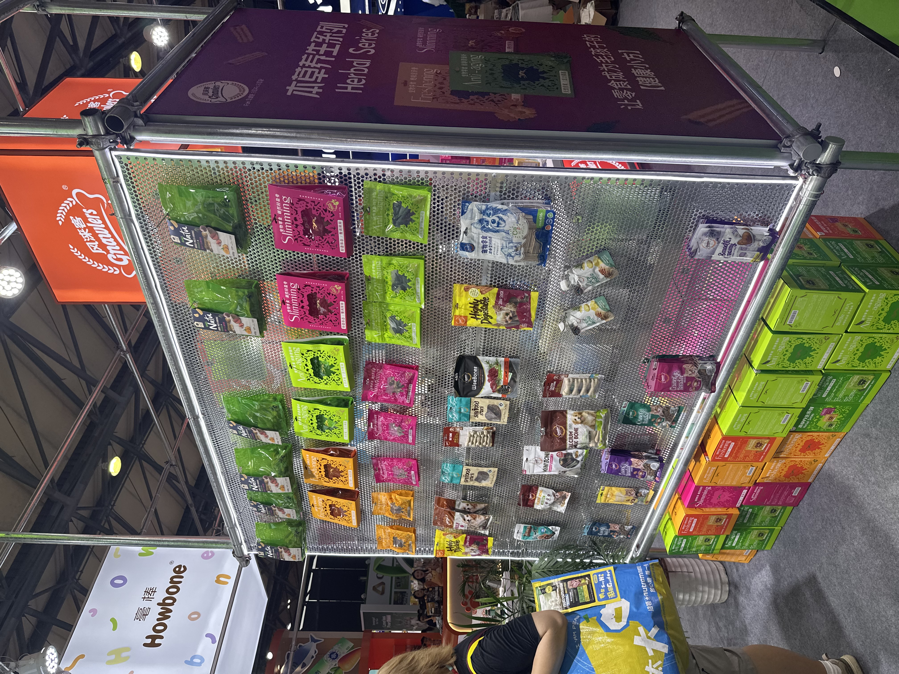
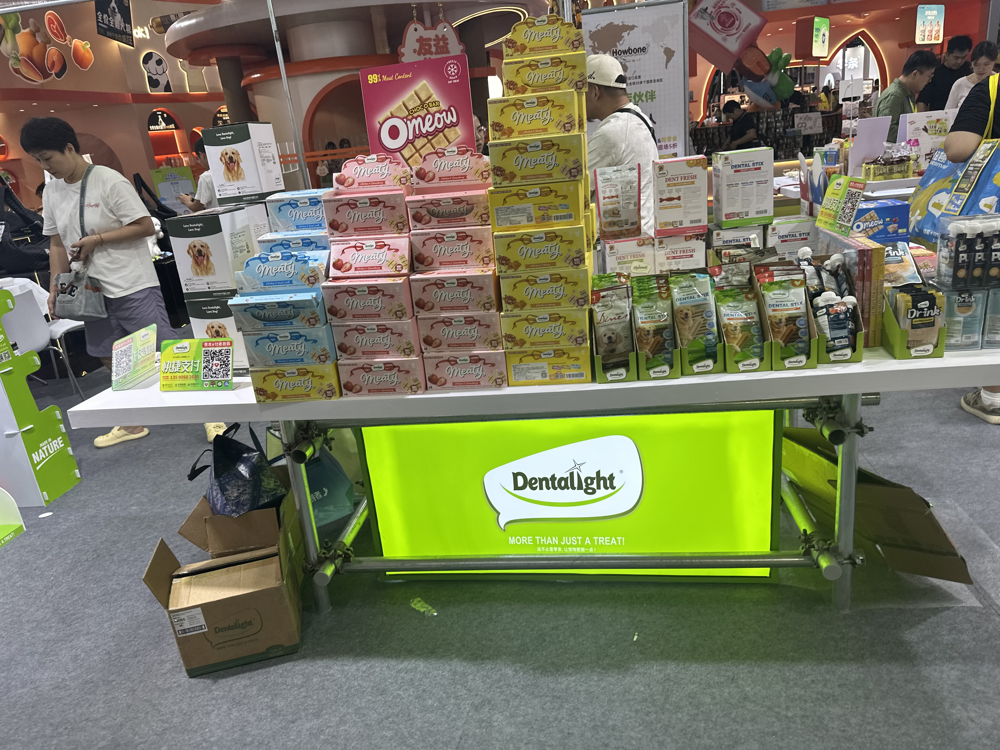
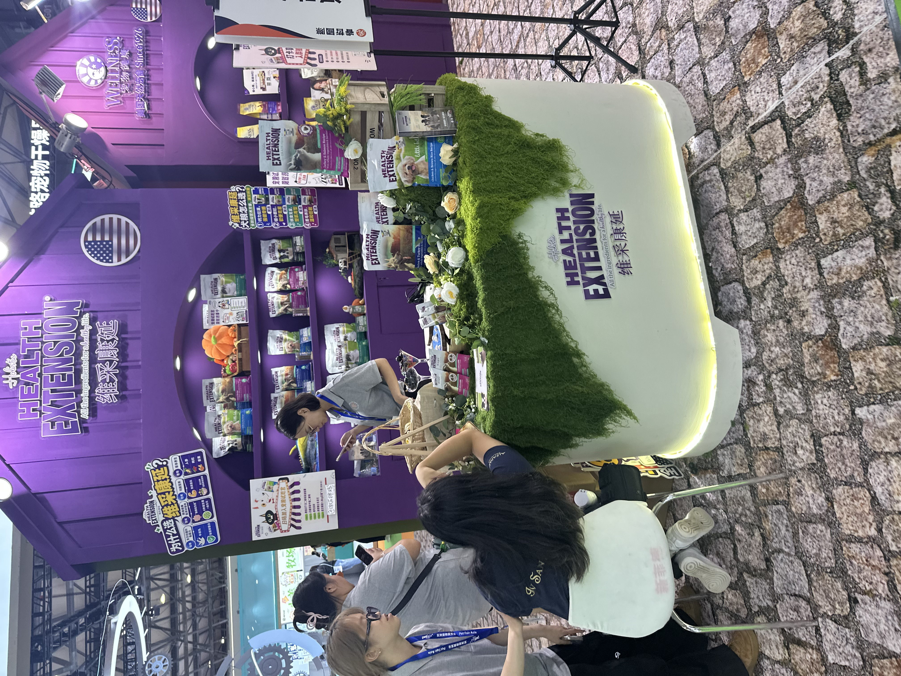

魔球 / MAGIC BALL
把零食包装，
做成可分享的画面。
魔球没有沿用典型主粮“成分大字报”的货架逻辑，而是把高饱和色块、密集图形和一点玩具感放在第一层。它在展场里会先被看见，再被读懂：包装有短视频封面般的识别效率，单品也具备拍照传播的画面性。对于宠物零食这类低决策品类，这种“先产生分享欲、再补足产品信息”的表达更容易获客；下一步要守住的，是系列化的信息层级和产品功效证据，让网感不只停在一次性吸睛。


